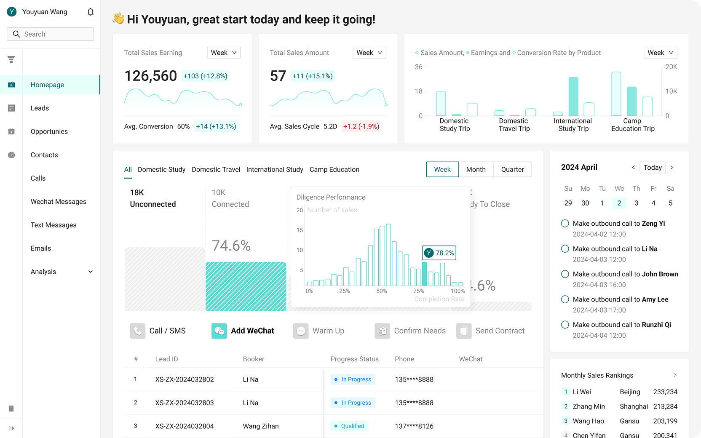
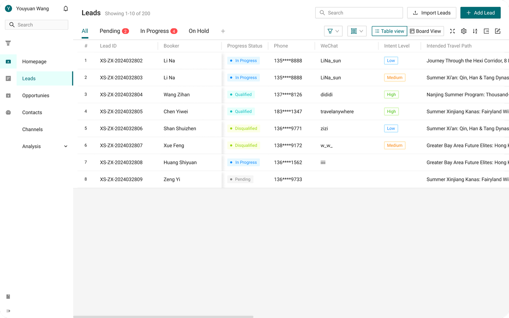
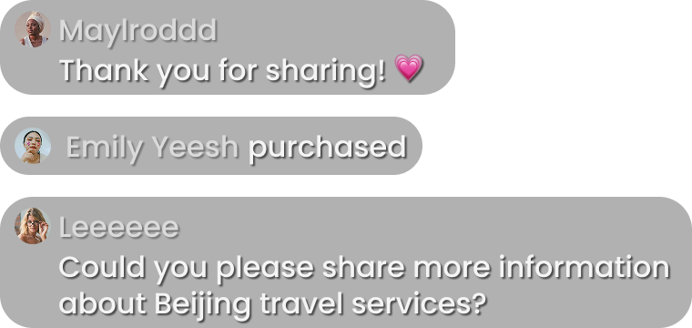
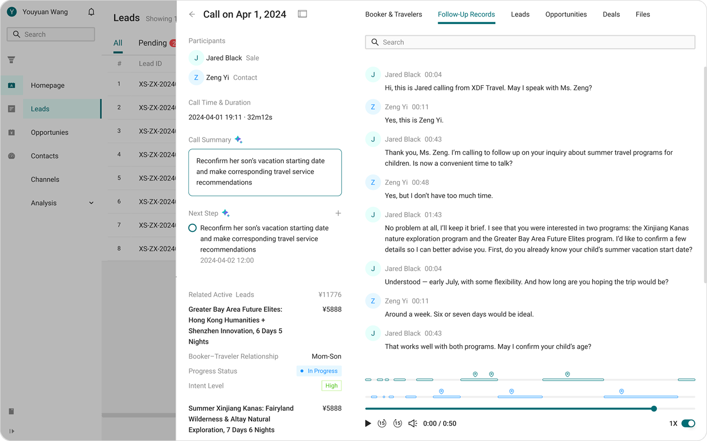

Convert Sales Data into Actionable Insights
The dashboard consolidates sales metrics and lead progress in real time, enabling teams to monitor performance, identify bottlenecks, and prioritize high-value opportunities more effectively.


Unify Fragmented Leads into a Unified Pipeline
Leads from multiple sources are centralized via APIs and structured with standardized labels to enable scalable management.



Turn Inquiries into Right Travel service Purchase
Sales review conversation history and AI-generated summaries to quickly understand traveler needs and provide tailored recommendations that help close the deal.
